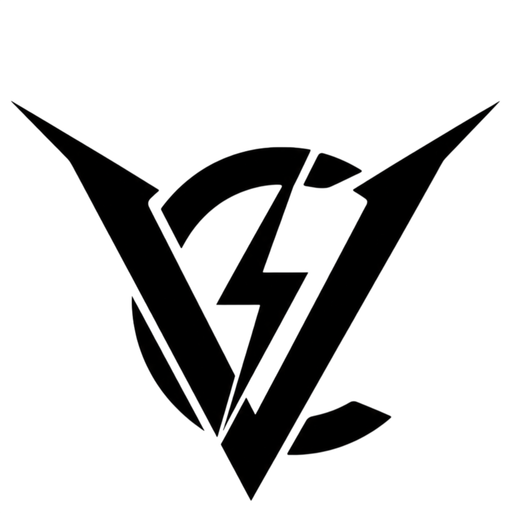
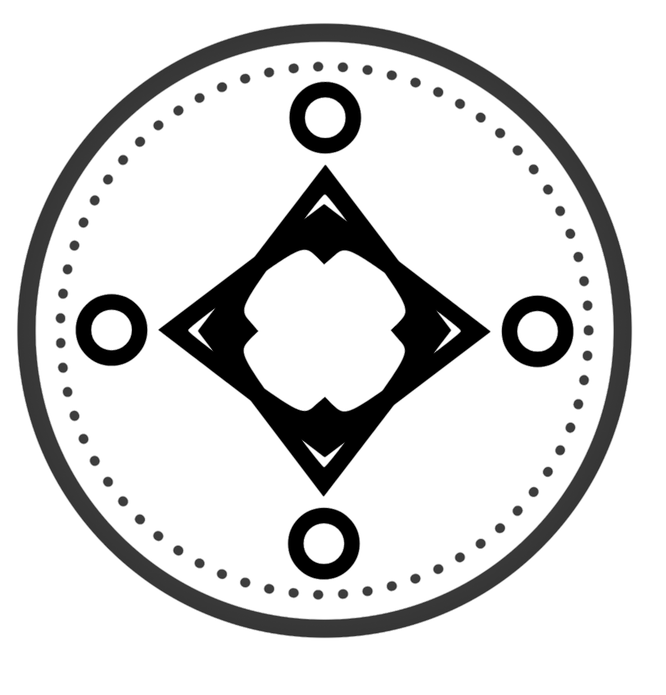

Volta Chronicles
SDT's connected superhero universe. A world rebuilt from the ashes of a tragedy nobody meant to cause — and quietly, slowly, becoming something its founders might not recognize.
In this world, superhumans are called supes — public, branded, impossible to ignore.

It used to be called Chronicles. It rebranded for public view as The Volta Accord.It starts with a tragedy nobody meant to cause.
In 1798, an experimental weapon detonated over the Russian city of Kimzha. Nearly every adult exposed to the blast died. A handful of children didn't — and what happened to their bodies, nobody could explain.
General Rickensaw Volta saw potential where everyone else saw a tragedy. He funded Doctor Artyom to run Project Volta: take whatever those children had become, and use it to end the wars that were killing everyone else. Thirty-two children entered the program. Eighteen survived it. Seven came out stable — the Perfect Subjects. Volta Chronicles is the two-century story of what happened after.
The War Era
The seven stable Perfect Subjects — Tamara, Vera, Boris, and four others — became the public face of the fight against three global tyrants: Henry Richard, Karl Malkovich, and Adolf Dillon. Tamara fought under her first identity, Flying Queen.
Dillon was the greatest threat of the three. His personal assassin, known only as The Hunter, murdered Tamara's brother Dimitri partway through the war. Consumed by grief, Tamara hunted the Hunter down herself and killed him. Volta didn't let him stay dead — they resurrected him as D.M.W., Dead Man Walking, and he has been fighting under that name ever since.
The dictators fell. The war finally ended. But of the original seven Perfect Subjects, only three — Tamara, Vera, and Boris — lived to see it.
The Hope Era
Project Volta formally became Volta Chronicles — an organization dedicated to rebuilding instead of fighting. Tamara retired the Flying Queen identity and became Sister Justice. Her closest friend Vera became Lady Justice, and together they spent decades rebuilding cities and inspiring nations by hand.
It was during this era that Volta's scientists discovered the K-Gene — the reason ordinary people occasionally develop weaker superhuman abilities of their own, a discovery that would eventually put superhumans into the public everyday world instead of keeping them mythic and distant.
The era ends in tragedy: Vera is assassinated near its close, under circumstances nobody has ever fully explained. Tamara never uses the name Sister Justice again — a promise to her closest friend that she has kept for over fifty years.
The New Era
Tamara becomes Lady Liberty. The world enters a period of unprecedented technological growth, and superhumans stop being distant, mythic figures — they go fully public, becoming celebrities, soldiers, and emergency responders. The Global Defense Agency (GDA) is founded specifically to regulate them.
Not everyone trusts where the GDA is heading. A GDA commander known only as Boss resigns rather than watch the agency get political, and founds D.Dogs — a private military organization built around protecting people instead of governments or profit.
Meanwhile Volta itself formally expands into the Volta Accord, becoming the single most influential organization on Earth. By the era's end, the company that once toppled three dictators looks uncomfortably close to becoming one of its own.
The Despair Era.
Tamara becomes Golden Star. On the surface, the modern world looks peaceful. Underneath, every major institution is fractured — and this is the era almost everything SDT is currently making is set inside.
This is the live wire. The one still being written. We're not spoiling it — not because there's nothing here, but because this is the part you're meant to find out by playing, reading, and watching as it ships.
Four sides. Nobody's clean.
No heroes, no villains — just power, and what it costs whoever's holding it.
The Volta Accord
Once just called Chronicles — rebranded for public view. Controls much of the world's technology and hero infrastructure now. Impossible to opt out of.
The GDA
The Global Defense Agency. Founded to regulate superhumans. Once respected. Increasingly, quietly, something else.
D.Dogs
Founded by a GDA commander who walked away from the politics. One of the few organizations ordinary people still trust.
AFP
The anti-superhuman movement. Rose in response to everything above. If power like this can't be trusted with anyone, why let anyone keep it?
Who you'll meet.
A taste of the cast — names, vibes, and just enough to make you curious. The rest stays sealed until it ships.

Golden Star
Born in Kimzha, 1798. Been through four hero names and two centuries and never once got to pick either. Quiet. Reserved. Everyone assumes she's Volta's most compliant asset.
Richard Volta
Started idealistic. Started believing peace needed control somewhere along the way. Calls Golden Star "Auntie." The charm is real — that's what makes it work.
Madam Volta
Present in every room that matters, gone the second things get warm. One of Golden Star's oldest friends. There's a whole story in how she got that name.
Ange
No money, no combat training, no business being anywhere near this world — and somehow right in the middle of it anyway. Doesn't know his own surname.
Tiger Striker
Built from the same biology as Golden Star. Optimistic, charismatic, a true believer — the next generation of hero, at least on paper.
Boss
Resigned from the GDA during the New Era, rather than watch the agency get political. Founded D.Dogs the same year. Doesn't take jobs motivated by politics or profit — rare, in this world.
Vera
One of the Original Seven Perfect Subjects. Golden Star's closest friend — helped rebuild the world by hand after the Great War. Assassinated near the end of the Hope Era. Her death is the reason "Sister Justice" was never used again.
D.M.W.
Adolf Dillon's personal assassin during the War Era — the one who killed Golden Star's brother, Dimitri. Golden Star hunted him down and killed him in return. Volta brought him back. He's been Dead Man Walking ever since, and doesn't age anymore.
??? ???
This dossier isn't cleared for release yet. Every cast page starts here before it gets a name, a face, and a reason you should care.